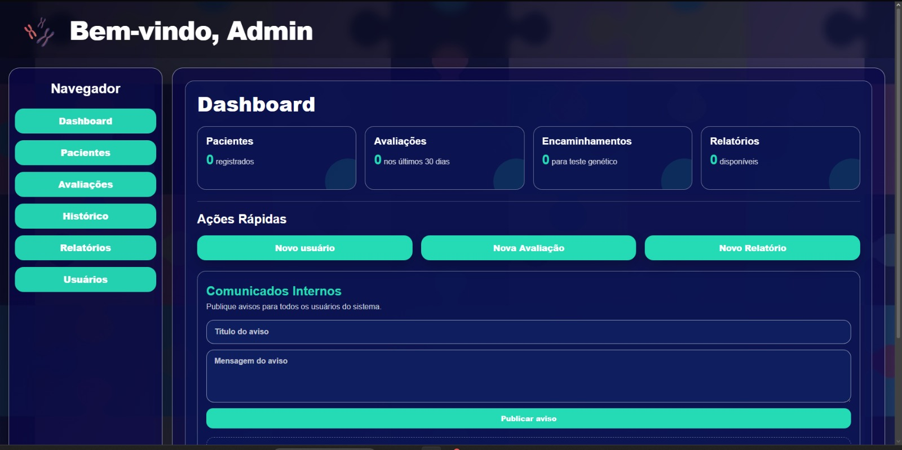
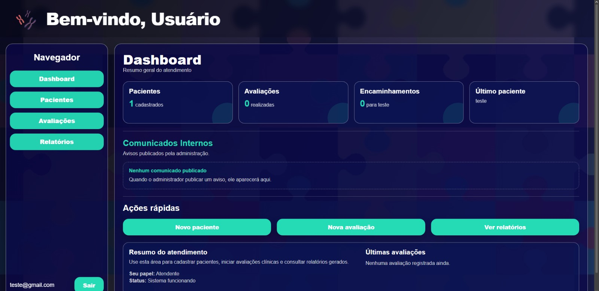
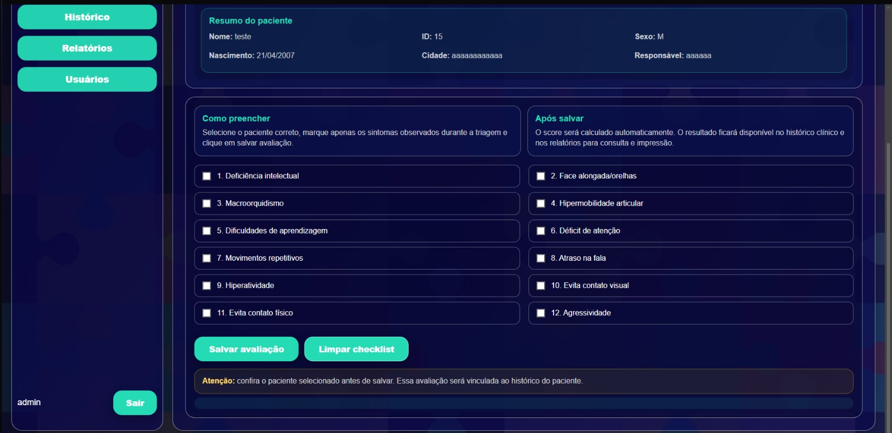
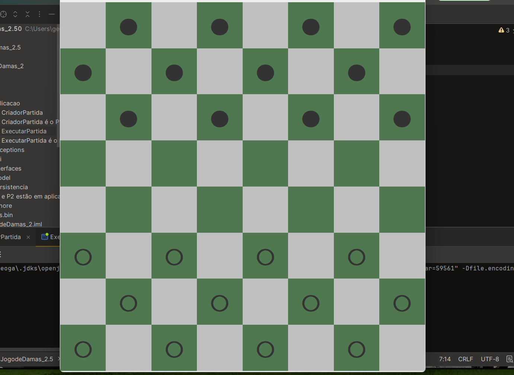
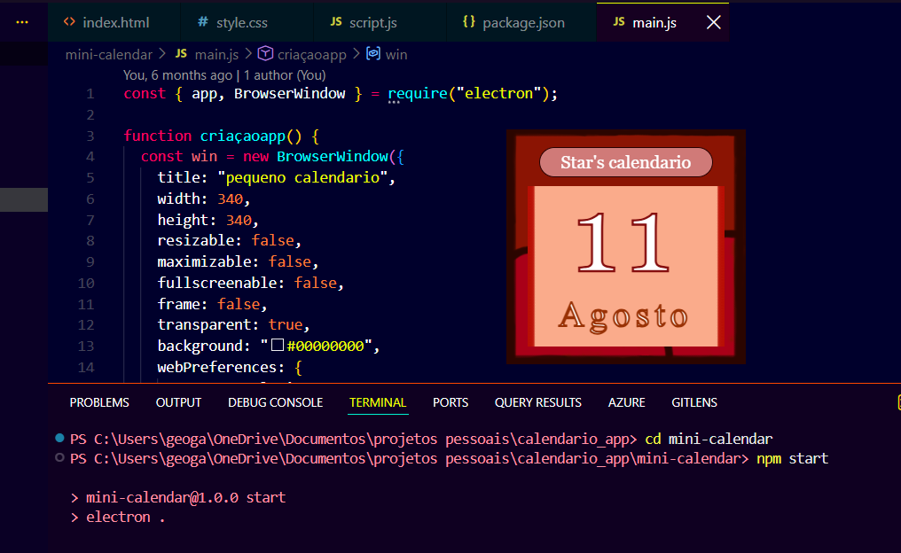

O X-Triagem é um site web que funciona como um sistema de triagem para um instituto Buko Kaesemodel, que promove a assistência social, saúde e educacional. Esse sistema foi desenvolvido para ser uma ferramenta de auxílio dos profissionais de saúde que cuidam das pessoas do tratamento da Síndrome do X-frágil.
HTML • CSS • Banco de Dados


O Jogo da Dama criado na linguagem Java funciona a partir da leitura de um arquivo CSV com os dados fornecidos durante o funcionamento do código da criação do jogo, nomeando os dois jogadores, para logo em seguida inicializar a partida; No fim dela é possível encontrar todo o histórico da partida no mesmo arquivo CSV.
Java • Arquivos CSV
O mini calendário desktop foi meu primeiro projeto pessoal que criei em 2025, foi a minha primeira aplicação utilizando o Node.JS junto com o eléctron. Esse mini projeto foi inspirado pela youtuber "Nasharelly", uma engenheira de software canadense que cria conteúdo com pequenos projetos simples e curiosos de se praticar.
Node.js • Electron • JavaScript